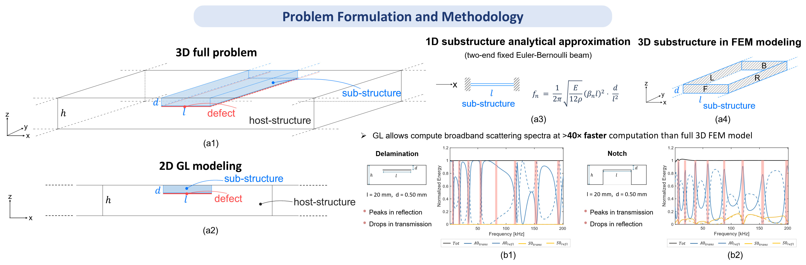

Problem Formulation and Methodology
Panel from the poster “Local Defect Resonance in Ultrasonic Guided Waves for Remote Defect Detection: Mechanism, Modeling, and Experimental Validation.”

Panel from the poster “Local Defect Resonance in Ultrasonic Guided Waves for Remote Defect Detection: Mechanism, Modeling, and Experimental Validation.”
